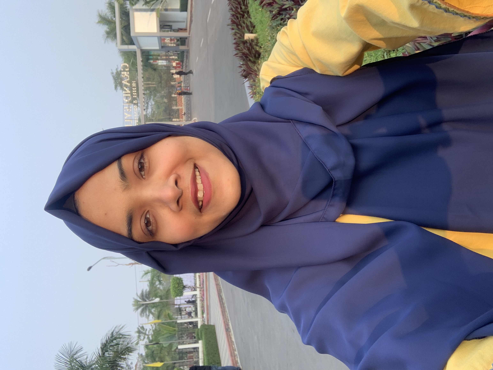

|  |
Tasfia Chowdhury NujatStudent at Leading University | CSE Department | 4th Year, 1st Semester Passionate about Web Development & App Development |
My career goal is to become a skilled web developer, where I can utilize my technical expertise and creativity to build innovative and user-friendly web applications.
| Board Exam | Institute | Year | Result |
|---|---|---|---|
| PSC | RKLS | 2012 | 5.00 |
| JSC | RKLS | 2015 | 5.00 |
| SSC | RKLS | 2018 | 5.00 |
| HSC | SGWC | 2020 | 5.00 |
Email: cse_182210012101178@lus.ac.bd
Phone: 01716847781
GitHub: TasfiaChowdhuryNujat
LinkedIn: Tasfia Chowdhury Nujat